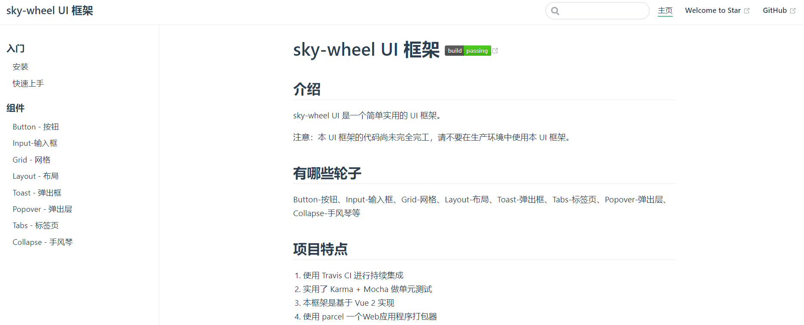
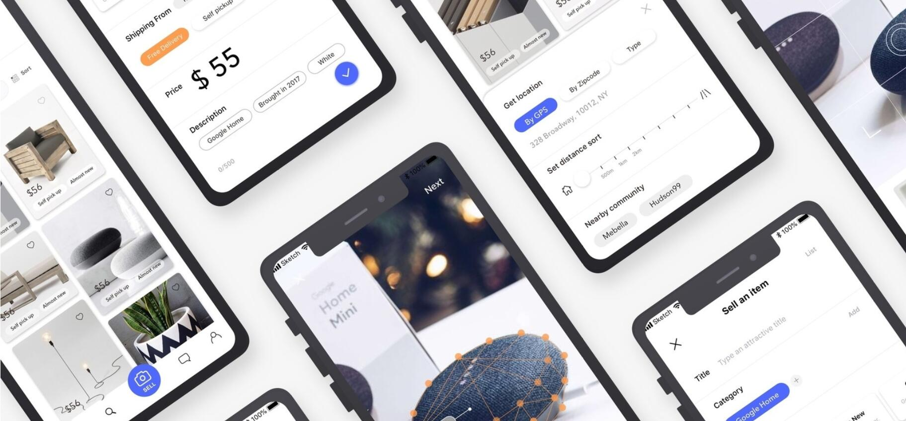

教育经历
2016.09-2019.07：云南财经大学 | 硕士 | 计算机应用技术
项目经历
sky-wheel UI 框架
- 项目介绍： 该项目是一个基于 Vue 实现的简单 UI 组件库， 设计思路主要来自Framework7、Ant Design、Element UI、iView 等 UI 库，该框架目前已支持 Button-按钮、Input-输入框、Grid-网格、Layout-布局、Toast-弹出框、Tabs-标签页、Popover-弹出层、Collapse-手风琴等。 每个组件的开发都是从需求分析到单元测试，再到 TravisCI 实现持续集成， 最终以VuePress 为基础制作了官方文档，并发布于npmjs.org。 该项目使我更加了解了 Vue 的常用特征，同时也使自己对前端工程化流程以及单元测试的重要性有了深刻理解。
- 技术栈：Vue2 + VuePress + Parcel + Karma + Mocha + SCSS + TravisCI + ES6 + Npm Script
- 项目源码：github.com/gotgith/sky-wheel
- 浏览链接：gotgith.github.io/sky-wheel/
基于Vue实现移动端商城
- 项目介绍： 该项目是一个基于 Vue框架 实现的 移动端商城， 此项目主要实现了首页，商品列表页，商品详情页，购物车页面，个人中心页，地址列表，地址修改，新增页等。项目中使用了RAP2来模拟数据，使用了webpack作为打包工具。
- 技术栈：Vue2 + Vue Router + Vuex + Axios + ES6 + Webpack + RAP2
- 项目源码：github.com/gotgith/youzan-mask.git
基于Vue设计的CNode社区

- 项目介绍：该项目是以 CNode 社区提供的官网 API 为基础， 使用 Vue 框架实现了 CNode 官方社区，目前实现了主体部分（更新中）。 该项目使用了 Vue CLI 创建项目模版， Axios 获取数据， Vue Router 进行前端路由的切换以及参数的传递， watch 监听路由的变化， Webpack 打包工具等。
- 技术栈：Vue2 + Vue CLI + Vue Router + Axios + ES6 + Npm + SCSS
- 项目源码：gotgith.github.io/cnode-mask/#/
- 浏览链接：github.com/gotgith/cnode-mask
简易在线画板

- 项目介绍：是一个使用纯原生 JS 开发的，主要利用 HTML 5 的 Canvas API ，是我在学习原生 JS 及 Canvas 过程中开发的小工具。 其提供在 PC 及手机端在线画画、橡皮擦、画笔调色、画作删除等功能，并支持画作下载。
- 项目源码：gotgith/canvas-demo-2019.git
- 浏览链接：github.io/canvas-demo-2019
卡哇伊Pikachu（皮卡丘）

- 项目介绍： 该项目使用原生 JS 来动态显示 CSS，从而实现了一个可爱的皮卡丘自动绘画的过程。 该项目的主要思路是通过间隔计时器遍历预先设置在 preview 标签内代码， 将其一个个显示在页面上，并在 style 标签上作同样处理，以使代码 CSS 生效。另外，还实现了 CSS 高亮效果及调速功能。
- 项目源码：github.com/make-a-pikachu
- 浏览链接：github.io/make-a-pikachu
技能描述
-
熟练掌握 HTML5 和常用 CSS3，具有 像素级 还原设计稿的能力。具有平均水准之上的审美，追求设计的优雅。
-
熟练掌握原生Javascript，掌握重要概念如： 原型 ， 闭包 ， 作用域链 ， 面向对象 ， 异步流程控制 等。 熟练使用 ES6 部分新特性，了解jQuery 常用 API 及思想。
-
熟悉 Vue 常用功能，理解如 生命周期 ， 组件 ，虚拟 DOM， 数据响应式 等概念，能够使用 Vue 全家桶开发项目。
-
熟悉 模块化 ， 工程化 开发流程，了解 Webpack 。
-
有移动端开发经验，会使用 REM ， vw/vh ， 响应式 等技术制作适配手机设备的页面。
-
熟悉 HTTP协议 及浏览器 渲染原理 ，了解前端 性能优化 策略。
-
面向 Google 及 Stack Overflow 编程。拥有总结书写（技术博客）的习惯。
-
了解Python，具有相关的使用经验（点我）。
-
熟练使用 VsCode ， WebStorm ， Sass ， Git 等开发工具。
个人经历
2018.05-2019.04在云南财经大学信管中心实习，主要工作是协助老师进行校园网站维护和开发，主要包括校园信息数据的上传、前端界面的实现等。